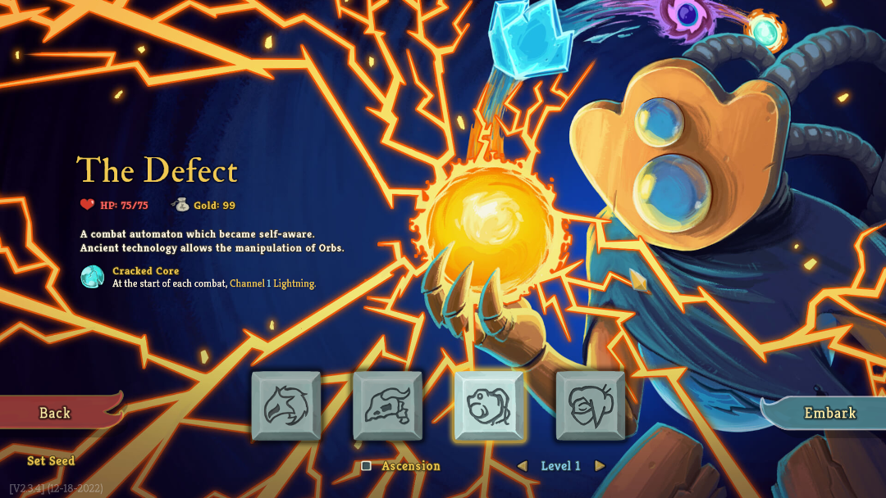

Slay The Spire
Ironclad
Silent
Defect
Watcher
Czym jest "Slay the Spire"?
Podstawowe mechaniki
Geneza i rozwój
Popularność i wpływ

Defect
- Trzeci bohater gry, główną mechaniką z której korzysta jest przywoływanie i używanie różnych kul,
posiada wiele kart mających efekt na całą długość walki. Dzięki startowemu reliktowi, rozpoczyna bitwy z elektryczną kulą.